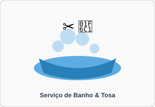
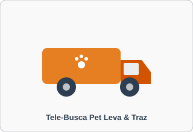

Nosso Centro de Estética Animal

No Pet Amigo, cada sessão de banho e tosa é conduzida com respeito aos limites e temperamento do seu cão ou gato. Contamos com profissionais certificados em estética animal, bancadas com piso emborrachado antiderrapante e sopradores de baixo ruído para não assustar os animais mais sensíveis.
Garantias de Higiene e Biossegurança:
- Uso de toalhas descartáveis de fibra vegetal esterilizadas e seladas individualmente.
- Lâminas de tosa, pentes e tesouras higienizados com álcool a 70% e esterilizados em estufa germicida após cada atendimento.
- Água aquecida com controle termostático preciso (entre 32°C e 36°C) para conforto absoluto do animal.
- Ambiente totalmente envidraçado para acompanhamento visual pelos tutores.
Como Funciona o Serviço de Tele-Busca (Leva & Traz)

Sabemos que o dia a dia pode ser corrido. Por isso, oferecemos o serviço de Tele-Busca para buscar e entregar o seu pet diretamente na sua casa ou apartamento com toda a segurança e pontualidade.
Vantagens e Procedimentos da Tele-Busca:
- Agendamento Prévio: O tutor escolhe o turno (manhã ou tarde) no momento do agendamento.
- Transporte Climatizado: Veículo equipado com sistema de climatização regulado para conforto térmico em todas as estações.
- Acomodação Segura e Individual: Cada animal viaja em sua própria caixa de transporte higienizada e forrada com tapete absorvente, evitando contato direto com outros animais.
- Motorista Especializado: Condutor treinado no manuseio calmo e seguro de animais de estimação.
- Área de Cobertura: Atendimento em toda a cidade num raio de até 10 km da loja física. Para distâncias superiores, consulte taxa adicional por quilômetro.
Tabela Oficial de Serviços e Valores
Compare abaixo as opções de serviços disponíveis e as modalidades de atendimento: Sem Tele-Busca (o tutor traz e busca o pet na loja) ou Com Tele-Busca (transporte de ida e volta incluso).
| Modalidade de Serviço | O que está Incluso na Sessão | Porte do Pet | Valor Sem Tele-Busca (Balcão) | Valor Com Tele-Busca (Leva & Traz) | Duração Média |
|---|---|---|---|---|---|
| 1. Banho Completo Tradicional |
• Banho com água morna e shampoo hipoalergênico • Condicionamento e hidratação básica • Secagem manual e escovação completa dos pelos • Limpeza e higienização dos ouvidos com loção antisséptica • Corte e lixamento de unhas • Perfume suave e acessório estético (laço ou gravatinha) |
Pequeno (Até 8 kg) | R$ 55,00 | R$ 80,00 | 1 hora |
| Médio (8,1 kg a 18 kg) | R$ 65,00 | R$ 90,00 | 1 hora e 20 min | ||
| Grande (Acima de 18 kg) | R$ 85,00 | R$ 115,00 | 1 hora e 50 min | ||
| 2. Tosa Higiênica + Banho Completo |
• Todos os itens do Banho Completo Tradicional • Aparo dos pelos da sola das patinhas (almofadas plantares) para evitar escorregões • Higienização e tosa dos pelos da região perianal e genital • Limpeza e desobstrução dos pelos ao redor dos olhos e focinho • Aparo sutil das pontas das orelhas |
Pequeno (Até 8 kg) | R$ 75,00 | R$ 100,00 | 1 hora e 30 min |
| Médio (8,1 kg a 18 kg) | R$ 85,00 | R$ 110,00 | 1 hora e 45 min | ||
| Grande (Acima de 18 kg) | R$ 110,00 | R$ 140,00 | 2 horas e 15 min | ||
| 3. Tosa Geral da Raça ou Tosa Bebê + Banho |
• Todos os itens da Tosa Higiênica e Banho Completo • Tosa estilizada na tesoura ou máquina conforme o padrão oficial da raça (ex: Poodle, Schnauzer, Shih-tzu, Maltês) • Hidratação profunda com máscara de queratina e óleo de argan • Escovação e desembaraçamento criterioso dos pelos |
Pequeno (Até 8 kg) | R$ 100,00 | R$ 125,00 | 2 horas |
| Médio (8,1 kg a 18 kg) | R$ 120,00 | R$ 145,00 | 2 horas e 30 min | ||
| Grande (Acima de 18 kg) | R$ 150,00 | R$ 180,00 | 3 horas | ||
| 4. Banho Especial para Felinos | Atendimento em sala silenciosa exclusiva para gatos, uso de feromônios sintéticos calmantes (Feliway), corte de unhas específico e secagem sem barulho. | Gatos (Todos os portes) | R$ 80,00 | R$ 105,00 | 1 hora e 15 min |
Formulário de Solicitação de Pré-Agendamento
Preencha os campos abaixo para solicitar a reserva de horário para o seu pet. Nossa equipe entrará em contato via WhatsApp ou telefone para confirmar a vaga e os detalhes da busca.